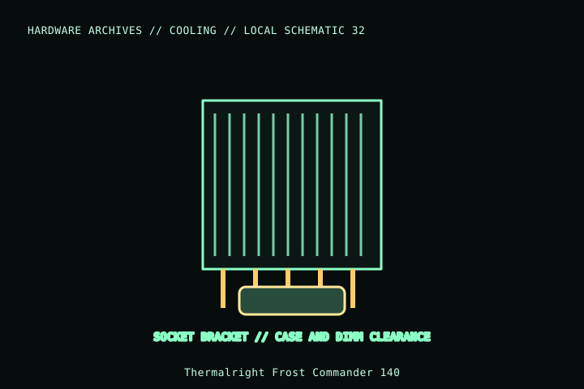

[ INDIVIDUAL COMPONENT // COOLING ]
Thermalright Frost Commander 140
Dual-tower CPU cooler supplied with one 120 mm and one 140 mm PWM fan. A 140 mm central fan and tall overall envelope affect RAM and chassis clearance; verify this standard Frost Commander 140 SKU.

MODEL IDENTIFICATION: Verify full model, suffix, SKU, generation, connector, and host-support documentation against the physical item. The record describes only the identified model and does not guarantee host compatibility.
Specifications
| Exact identity | Frost Commander 140 |
|---|---|
| Heatsink envelope | 140 × 121 × 158 mm per manufacturer specification; confirm orientation in the product manual. |
| Heatpipes | Five 8 mm heatpipes. |
| Included fan arrangement | One 120 mm TL-C12 and one 140 mm TL-D14, 4-pin PWM variants; check exact packaging/revision. |
| Socket mounting | Manufacturer lists supported Intel desktop and AMD AM4/AM5 sockets; use the current model-specific compatibility list for LGA2011/-3 variants and mounting kit. |
| Clearance | 158 mm cooler height; overhang and fan position can affect DIMM, VRM, PCIe, and case-panel clearance. |
Compatibility and installation
- Check exact socket kit and board compatibility; do not assume workstation/server sockets are supported.
- Measure the 158 mm height and verify memory/VRM clearance; the front fan position can be raised to clear memory, which increases overall height.
- Connect both 4-pin fans through the manufacturer arrangement and keep the combined current within the motherboard/controller rating.
Service notes
With power off, hold both fans stationary while removing dust. If the heatsink is lifted, clean and renew thermal compound; use the included mounting sequence and inspect clips before reuse.
Manufacturer references
- Thermalright — Frost Commander 140Manufacturer product page includes dimensions, socket family and included-fan details.
- Thermalright — SupportManufacturer mounting and support documentation.
Model variants and revisions may change specifications or included hardware; the manufacturer’s exact product page/manual and the host manual take precedence.